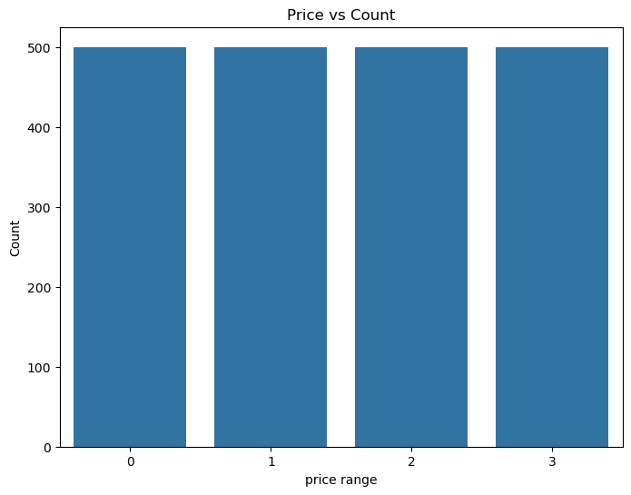
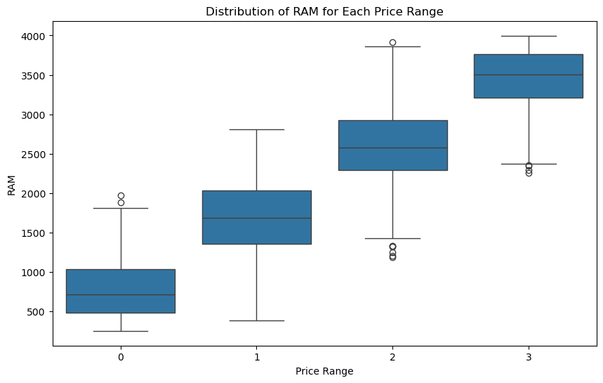
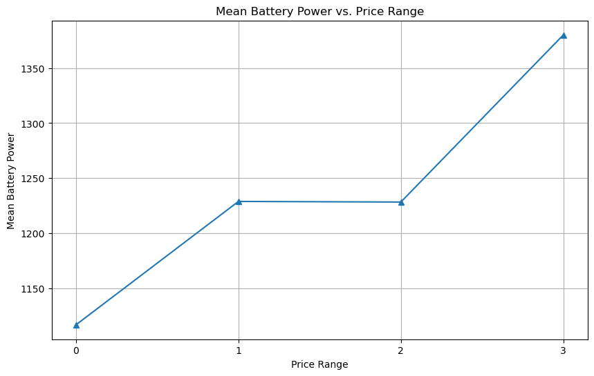
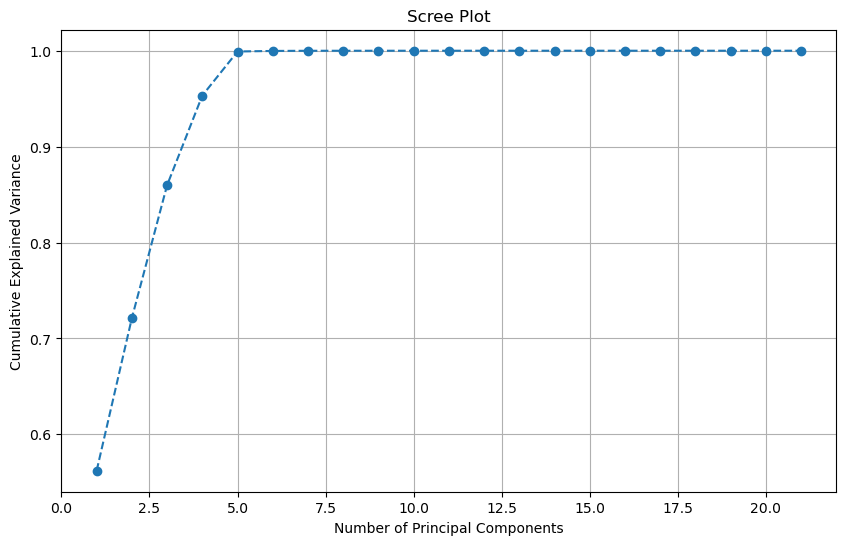

Mobile Price Range Prediction#
# Import required libraries
import pandas as pd
import numpy as np
import sqlite3
from sklearn.model_selection import train_test_split, cross_val_score, StratifiedKFold
from sklearn.preprocessing import StandardScaler, MinMaxScaler, FunctionTransformer
from sklearn.pipeline import Pipeline
from sklearn.linear_model import LogisticRegression, RidgeClassifier
from sklearn.ensemble import RandomForestClassifier, StackingClassifier, GradientBoostingClassifier
from xgboost import XGBClassifier
from sklearn.decomposition import PCA
from sklearn.feature_selection import VarianceThreshold
from sklearn.metrics import f1_score, confusion_matrix
import matplotlib.pyplot as plt
import seaborn as sns
import joblib
import os
import tempfile
# Step 1: Load and Normalize Data (3NF)
# ----------------------------
train_path = "train.csv"
train_data = pd.read_csv(train_path)
---------------------------------------------------------------------------
FileNotFoundError Traceback (most recent call last)
Cell In[2], line 4
1 # Step 1: Load and Normalize Data (3NF)
2 # ----------------------------
3 train_path = "train.csv"
----> 4 train_data = pd.read_csv(train_path)
File /opt/anaconda3/lib/python3.12/site-packages/pandas/io/parsers/readers.py:1026, in read_csv(filepath_or_buffer, sep, delimiter, header, names, index_col, usecols, dtype, engine, converters, true_values, false_values, skipinitialspace, skiprows, skipfooter, nrows, na_values, keep_default_na, na_filter, verbose, skip_blank_lines, parse_dates, infer_datetime_format, keep_date_col, date_parser, date_format, dayfirst, cache_dates, iterator, chunksize, compression, thousands, decimal, lineterminator, quotechar, quoting, doublequote, escapechar, comment, encoding, encoding_errors, dialect, on_bad_lines, delim_whitespace, low_memory, memory_map, float_precision, storage_options, dtype_backend)
1013 kwds_defaults = _refine_defaults_read(
1014 dialect,
1015 delimiter,
(...)
1022 dtype_backend=dtype_backend,
1023 )
1024 kwds.update(kwds_defaults)
-> 1026 return _read(filepath_or_buffer, kwds)
File /opt/anaconda3/lib/python3.12/site-packages/pandas/io/parsers/readers.py:620, in _read(filepath_or_buffer, kwds)
617 _validate_names(kwds.get("names", None))
619 # Create the parser.
--> 620 parser = TextFileReader(filepath_or_buffer, **kwds)
622 if chunksize or iterator:
623 return parser
File /opt/anaconda3/lib/python3.12/site-packages/pandas/io/parsers/readers.py:1620, in TextFileReader.__init__(self, f, engine, **kwds)
1617 self.options["has_index_names"] = kwds["has_index_names"]
1619 self.handles: IOHandles | None = None
-> 1620 self._engine = self._make_engine(f, self.engine)
File /opt/anaconda3/lib/python3.12/site-packages/pandas/io/parsers/readers.py:1880, in TextFileReader._make_engine(self, f, engine)
1878 if "b" not in mode:
1879 mode += "b"
-> 1880 self.handles = get_handle(
1881 f,
1882 mode,
1883 encoding=self.options.get("encoding", None),
1884 compression=self.options.get("compression", None),
1885 memory_map=self.options.get("memory_map", False),
1886 is_text=is_text,
1887 errors=self.options.get("encoding_errors", "strict"),
1888 storage_options=self.options.get("storage_options", None),
1889 )
1890 assert self.handles is not None
1891 f = self.handles.handle
File /opt/anaconda3/lib/python3.12/site-packages/pandas/io/common.py:873, in get_handle(path_or_buf, mode, encoding, compression, memory_map, is_text, errors, storage_options)
868 elif isinstance(handle, str):
869 # Check whether the filename is to be opened in binary mode.
870 # Binary mode does not support 'encoding' and 'newline'.
871 if ioargs.encoding and "b" not in ioargs.mode:
872 # Encoding
--> 873 handle = open(
874 handle,
875 ioargs.mode,
876 encoding=ioargs.encoding,
877 errors=errors,
878 newline="",
879 )
880 else:
881 # Binary mode
882 handle = open(handle, ioargs.mode)
FileNotFoundError: [Errno 2] No such file or directory: 'train.csv'
# Create SQLite connection
conn = sqlite3.connect('mobile_specs.db')
cursor = conn.cursor()
# Drop existing tables if they exist
cursor.execute("DROP TABLE IF EXISTS Mobile;")
cursor.execute("DROP TABLE IF EXISTS Features;")
cursor.execute("DROP TABLE IF EXISTS Camera;")
cursor.execute("DROP TABLE IF EXISTS Display;")
cursor.execute("DROP TABLE IF EXISTS Processor;")
cursor.execute("DROP TABLE IF EXISTS Price;")
# Create Mobile table
cursor.execute("""
CREATE TABLE Mobile (
id INTEGER PRIMARY KEY,
battery_power INTEGER,
clock_speed REAL,
m_dep REAL,
mobile_wt INTEGER,
ram INTEGER,
int_memory INTEGER,
talk_time INTEGER
);
""")
# Create Features table
cursor.execute("""
CREATE TABLE Features (
id INTEGER PRIMARY KEY,
blue INTEGER,
dual_sim INTEGER,
four_g INTEGER,
three_g INTEGER,
touch_screen INTEGER,
int_memory INTEGER,
wifi INTEGER,
FOREIGN KEY (id) REFERENCES Mobile (id)
);
""")
# Create Camera table
cursor.execute("""
CREATE TABLE Camera (
id INTEGER PRIMARY KEY,
fc INTEGER,
pc INTEGER,
sc_h INTEGER,
sc_w INTEGER,
FOREIGN KEY (id) REFERENCES Mobile (id)
);
""")
# Create Display table
cursor.execute("""
CREATE TABLE Display (
id INTEGER PRIMARY KEY,
px_height INTEGER,
px_width INTEGER,
FOREIGN KEY (id) REFERENCES Mobile (id)
);
""")
# Create Processor table
cursor.execute("""
CREATE TABLE Processor (
id INTEGER PRIMARY KEY,
n_cores INTEGER,
FOREIGN KEY (id) REFERENCES Mobile (id)
);
"""
)
cursor.execute("""
CREATE TABLE Price (
id INTEGER PRIMARY KEY,
price_range INTEGER,
FOREIGN KEY (id) REFERENCES Mobile (id)
);
"""
)
# Commit the table creation
conn.commit()
# Populate the tables using your dataset (assuming `df` is the loaded dataset)
df = train_data
# Mobile Table
mobile_cols = ['id', 'battery_power', 'clock_speed', 'm_dep', 'mobile_wt', 'ram', 'int_memory', 'talk_time']
df[mobile_cols].to_sql('Mobile', conn, if_exists='append', index=False)
# Features Table
features_cols = ['id', 'blue', 'dual_sim', 'four_g', 'three_g', 'touch_screen', 'wifi']
df[features_cols].to_sql('Features', conn, if_exists='append', index=False)
# Camera Table
camera_cols = ['id', 'fc', 'pc', 'sc_h', 'sc_w']
df[camera_cols].to_sql('Camera', conn, if_exists='append', index=False)
# Display Table
display_cols = ['id', 'px_height', 'px_width']
df[display_cols].to_sql('Display', conn, if_exists='append', index=False)
# Processor Table
processor_cols = ['id', 'n_cores']
df[processor_cols].to_sql('Processor', conn, if_exists='append', index=False)
# Processor Table
price_cols = ['id', 'price_range']
df[price_cols].to_sql('Price', conn, if_exists='append', index=False)
# Verify tables
tables = cursor.execute("SELECT name FROM sqlite_master WHERE type='table';").fetchall()
print("Tables created:", tables)
Tables created: [('Mobile',), ('Features',), ('Camera',), ('Display',), ('Processor',), ('Price',)]
query = """
SELECT
m.id, m.battery_power, m.clock_speed, m.m_dep, m.mobile_wt, m.ram, m.int_memory, m.talk_time,
f.blue, f.dual_sim, f.four_g, f.three_g, f.touch_screen, f.wifi,
c.fc, c.pc, c.sc_h, c.sc_w,
d.px_height, d.px_width,
p.n_cores,
pr.price_range
FROM
Mobile m
JOIN
Features f ON m.id = f.id
JOIN
Camera c ON m.id = c.id
JOIN
Display d ON m.id = d.id
JOIN
Processor p ON m.id = p.id
JOIN
Price pr ON m.id = pr.id
"""
# Load the data into a Pandas DataFrame
df_joined = pd.read_sql_query(query, conn)
conn.close()
df.info()
<class 'pandas.core.frame.DataFrame'>
RangeIndex: 2000 entries, 0 to 1999
Data columns (total 22 columns):
# Column Non-Null Count Dtype
--- ------ -------------- -----
0 id 2000 non-null int64
1 battery_power 2000 non-null int64
2 blue 2000 non-null int64
3 clock_speed 2000 non-null float64
4 dual_sim 2000 non-null int64
5 fc 2000 non-null int64
6 four_g 2000 non-null int64
7 int_memory 2000 non-null int64
8 m_dep 2000 non-null float64
9 mobile_wt 2000 non-null int64
10 n_cores 2000 non-null int64
11 pc 2000 non-null int64
12 px_height 2000 non-null int64
13 px_width 2000 non-null int64
14 ram 2000 non-null int64
15 sc_h 2000 non-null int64
16 sc_w 2000 non-null int64
17 talk_time 2000 non-null int64
18 three_g 2000 non-null int64
19 touch_screen 2000 non-null int64
20 wifi 2000 non-null int64
21 price_range 2000 non-null int64
dtypes: float64(2), int64(20)
memory usage: 343.9 KB
df_joined.info()
<class 'pandas.core.frame.DataFrame'>
RangeIndex: 2000 entries, 0 to 1999
Data columns (total 22 columns):
# Column Non-Null Count Dtype
--- ------ -------------- -----
0 id 2000 non-null int64
1 battery_power 2000 non-null int64
2 clock_speed 2000 non-null float64
3 m_dep 2000 non-null float64
4 mobile_wt 2000 non-null int64
5 ram 2000 non-null int64
6 int_memory 2000 non-null int64
7 talk_time 2000 non-null int64
8 blue 2000 non-null int64
9 dual_sim 2000 non-null int64
10 four_g 2000 non-null int64
11 three_g 2000 non-null int64
12 touch_screen 2000 non-null int64
13 wifi 2000 non-null int64
14 fc 2000 non-null int64
15 pc 2000 non-null int64
16 sc_h 2000 non-null int64
17 sc_w 2000 non-null int64
18 px_height 2000 non-null int64
19 px_width 2000 non-null int64
20 n_cores 2000 non-null int64
21 price_range 2000 non-null int64
dtypes: float64(2), int64(20)
memory usage: 343.9 KB
print(df_joined.describe())
id battery_power clock_speed m_dep mobile_wt \
count 2000.000000 2000.000000 2000.000000 2000.000000 2000.000000
mean 1000.500000 1238.518500 1.522250 0.501750 140.249000
std 577.494589 439.418206 0.816004 0.288416 35.399655
min 1.000000 501.000000 0.500000 0.100000 80.000000
25% 500.750000 851.750000 0.700000 0.200000 109.000000
50% 1000.500000 1226.000000 1.500000 0.500000 141.000000
75% 1500.250000 1615.250000 2.200000 0.800000 170.000000
max 2000.000000 1998.000000 3.000000 1.000000 200.000000
ram int_memory talk_time blue dual_sim ... \
count 2000.000000 2000.000000 2000.000000 2000.0000 2000.000000 ...
mean 2124.213000 32.046500 11.011000 0.4950 0.509500 ...
std 1084.732044 18.145715 5.463955 0.5001 0.500035 ...
min 256.000000 2.000000 2.000000 0.0000 0.000000 ...
25% 1207.500000 16.000000 6.000000 0.0000 0.000000 ...
50% 2146.500000 32.000000 11.000000 0.0000 1.000000 ...
75% 3064.500000 48.000000 16.000000 1.0000 1.000000 ...
max 3998.000000 64.000000 20.000000 1.0000 1.000000 ...
touch_screen wifi fc pc sc_h \
count 2000.000000 2000.000000 2000.000000 2000.000000 2000.000000
mean 0.503000 0.507000 4.309500 9.916500 12.306500
std 0.500116 0.500076 4.341444 6.064315 4.213245
min 0.000000 0.000000 0.000000 0.000000 5.000000
25% 0.000000 0.000000 1.000000 5.000000 9.000000
50% 1.000000 1.000000 3.000000 10.000000 12.000000
75% 1.000000 1.000000 7.000000 15.000000 16.000000
max 1.000000 1.000000 19.000000 20.000000 19.000000
sc_w px_height px_width n_cores price_range
count 2000.000000 2000.000000 2000.000000 2000.000000 2000.000000
mean 5.767000 645.108000 1251.515500 4.520500 1.500000
std 4.356398 443.780811 432.199447 2.287837 1.118314
min 0.000000 0.000000 500.000000 1.000000 0.000000
25% 2.000000 282.750000 874.750000 3.000000 0.750000
50% 5.000000 564.000000 1247.000000 4.000000 1.500000
75% 9.000000 947.250000 1633.000000 7.000000 2.250000
max 18.000000 1960.000000 1998.000000 8.000000 3.000000
[8 rows x 22 columns]
print("Training Data Overview:")
# Correlation matrix
plt.figure(figsize=(12, 10))
sns.heatmap(df_joined.corr(), annot=False, cmap='coolwarm', linewidths=0.5)
plt.title('Correlation Matrix of Features')
plt.show()
Training Data Overview:
df_joined.nunique()
id 2000
battery_power 1094
clock_speed 26
m_dep 10
mobile_wt 121
ram 1562
int_memory 63
talk_time 19
blue 2
dual_sim 2
four_g 2
three_g 2
touch_screen 2
wifi 2
fc 20
pc 21
sc_h 15
sc_w 19
px_height 1137
px_width 1109
n_cores 8
price_range 4
dtype: int64
plt.figure(figsize=(8, 6))
sns.countplot(x='price_range', data=df_joined)
plt.title('Price vs Count')
plt.xlabel('price range')
plt.ylabel("Count")
plt.show()

y = df_joined['price_range']
X = df_joined.drop(['price_range'], axis=1)
X_train, X_test, y_train, y_test = train_test_split(X, y, test_size=0.25, random_state=42)
X_train.shape
(1500, 21)
plt.figure(figsize=(10, 6)) # Adjust figure size as needed
sns.boxplot(x='price_range', y='ram', data=df_joined)
plt.title('Distribution of RAM for Each Price Range')
plt.xlabel('Price Range')
plt.ylabel('RAM')
plt.show()

battery_by_price = df_joined.groupby('price_range')['battery_power'].mean()
plt.figure(figsize=(10, 6))
battery_by_price.plot(kind='line', marker='^')
plt.title('Mean Battery Power vs. Price Range')
plt.xlabel('Price Range')
plt.ylabel('Mean Battery Power')
plt.xticks(battery_by_price.index)
plt.grid(True)
plt.show()

!pip install mlflow
Requirement already satisfied: mlflow in /opt/anaconda3/lib/python3.12/site-packages (2.19.0)
Requirement already satisfied: mlflow-skinny==2.19.0 in /opt/anaconda3/lib/python3.12/site-packages (from mlflow) (2.19.0)
Requirement already satisfied: Flask<4 in /opt/anaconda3/lib/python3.12/site-packages (from mlflow) (3.0.3)
Requirement already satisfied: Jinja2<4,>=2.11 in /opt/anaconda3/lib/python3.12/site-packages (from mlflow) (3.1.4)
Requirement already satisfied: alembic!=1.10.0,<2 in /opt/anaconda3/lib/python3.12/site-packages (from mlflow) (1.14.0)
Requirement already satisfied: docker<8,>=4.0.0 in /opt/anaconda3/lib/python3.12/site-packages (from mlflow) (7.1.0)
Requirement already satisfied: graphene<4 in /opt/anaconda3/lib/python3.12/site-packages (from mlflow) (3.4.3)
Requirement already satisfied: gunicorn<24 in /opt/anaconda3/lib/python3.12/site-packages (from mlflow) (23.0.0)
Requirement already satisfied: markdown<4,>=3.3 in /opt/anaconda3/lib/python3.12/site-packages (from mlflow) (3.4.1)
Requirement already satisfied: matplotlib<4 in /opt/anaconda3/lib/python3.12/site-packages (from mlflow) (3.8.4)
Requirement already satisfied: numpy<3 in /opt/anaconda3/lib/python3.12/site-packages (from mlflow) (1.26.4)
Requirement already satisfied: pandas<3 in /opt/anaconda3/lib/python3.12/site-packages (from mlflow) (2.2.2)
Requirement already satisfied: pyarrow<19,>=4.0.0 in /opt/anaconda3/lib/python3.12/site-packages (from mlflow) (14.0.2)
Requirement already satisfied: scikit-learn<2 in /opt/anaconda3/lib/python3.12/site-packages (from mlflow) (1.4.2)
Requirement already satisfied: scipy<2 in /opt/anaconda3/lib/python3.12/site-packages (from mlflow) (1.13.1)
Requirement already satisfied: sqlalchemy<3,>=1.4.0 in /opt/anaconda3/lib/python3.12/site-packages (from mlflow) (2.0.30)
Requirement already satisfied: cachetools<6,>=5.0.0 in /opt/anaconda3/lib/python3.12/site-packages (from mlflow-skinny==2.19.0->mlflow) (5.3.3)
Requirement already satisfied: click<9,>=7.0 in /opt/anaconda3/lib/python3.12/site-packages (from mlflow-skinny==2.19.0->mlflow) (8.1.7)
Requirement already satisfied: cloudpickle<4 in /opt/anaconda3/lib/python3.12/site-packages (from mlflow-skinny==2.19.0->mlflow) (2.2.1)
Requirement already satisfied: databricks-sdk<1,>=0.20.0 in /opt/anaconda3/lib/python3.12/site-packages (from mlflow-skinny==2.19.0->mlflow) (0.40.0)
Requirement already satisfied: gitpython<4,>=3.1.9 in /opt/anaconda3/lib/python3.12/site-packages (from mlflow-skinny==2.19.0->mlflow) (3.1.37)
Requirement already satisfied: importlib_metadata!=4.7.0,<9,>=3.7.0 in /opt/anaconda3/lib/python3.12/site-packages (from mlflow-skinny==2.19.0->mlflow) (7.0.1)
Requirement already satisfied: opentelemetry-api<3,>=1.9.0 in /opt/anaconda3/lib/python3.12/site-packages (from mlflow-skinny==2.19.0->mlflow) (1.29.0)
Requirement already satisfied: opentelemetry-sdk<3,>=1.9.0 in /opt/anaconda3/lib/python3.12/site-packages (from mlflow-skinny==2.19.0->mlflow) (1.29.0)
Requirement already satisfied: packaging<25 in /opt/anaconda3/lib/python3.12/site-packages (from mlflow-skinny==2.19.0->mlflow) (23.2)
Requirement already satisfied: protobuf<6,>=3.12.0 in /opt/anaconda3/lib/python3.12/site-packages (from mlflow-skinny==2.19.0->mlflow) (3.20.3)
Requirement already satisfied: pyyaml<7,>=5.1 in /opt/anaconda3/lib/python3.12/site-packages (from mlflow-skinny==2.19.0->mlflow) (6.0.1)
Requirement already satisfied: requests<3,>=2.17.3 in /opt/anaconda3/lib/python3.12/site-packages (from mlflow-skinny==2.19.0->mlflow) (2.32.2)
Requirement already satisfied: sqlparse<1,>=0.4.0 in /opt/anaconda3/lib/python3.12/site-packages (from mlflow-skinny==2.19.0->mlflow) (0.5.3)
Requirement already satisfied: Mako in /opt/anaconda3/lib/python3.12/site-packages (from alembic!=1.10.0,<2->mlflow) (1.3.8)
Requirement already satisfied: typing-extensions>=4 in /opt/anaconda3/lib/python3.12/site-packages (from alembic!=1.10.0,<2->mlflow) (4.11.0)
Requirement already satisfied: urllib3>=1.26.0 in /opt/anaconda3/lib/python3.12/site-packages (from docker<8,>=4.0.0->mlflow) (2.2.2)
Requirement already satisfied: Werkzeug>=3.0.0 in /opt/anaconda3/lib/python3.12/site-packages (from Flask<4->mlflow) (3.0.3)
Requirement already satisfied: itsdangerous>=2.1.2 in /opt/anaconda3/lib/python3.12/site-packages (from Flask<4->mlflow) (2.2.0)
Requirement already satisfied: blinker>=1.6.2 in /opt/anaconda3/lib/python3.12/site-packages (from Flask<4->mlflow) (1.6.2)
Requirement already satisfied: graphql-core<3.3,>=3.1 in /opt/anaconda3/lib/python3.12/site-packages (from graphene<4->mlflow) (3.2.5)
Requirement already satisfied: graphql-relay<3.3,>=3.1 in /opt/anaconda3/lib/python3.12/site-packages (from graphene<4->mlflow) (3.2.0)
Requirement already satisfied: python-dateutil<3,>=2.7.0 in /opt/anaconda3/lib/python3.12/site-packages (from graphene<4->mlflow) (2.9.0.post0)
Requirement already satisfied: MarkupSafe>=2.0 in /opt/anaconda3/lib/python3.12/site-packages (from Jinja2<4,>=2.11->mlflow) (2.1.3)
Requirement already satisfied: contourpy>=1.0.1 in /opt/anaconda3/lib/python3.12/site-packages (from matplotlib<4->mlflow) (1.2.0)
Requirement already satisfied: cycler>=0.10 in /opt/anaconda3/lib/python3.12/site-packages (from matplotlib<4->mlflow) (0.11.0)
Requirement already satisfied: fonttools>=4.22.0 in /opt/anaconda3/lib/python3.12/site-packages (from matplotlib<4->mlflow) (4.51.0)
Requirement already satisfied: kiwisolver>=1.3.1 in /opt/anaconda3/lib/python3.12/site-packages (from matplotlib<4->mlflow) (1.4.4)
Requirement already satisfied: pillow>=8 in /opt/anaconda3/lib/python3.12/site-packages (from matplotlib<4->mlflow) (10.3.0)
Requirement already satisfied: pyparsing>=2.3.1 in /opt/anaconda3/lib/python3.12/site-packages (from matplotlib<4->mlflow) (3.0.9)
Requirement already satisfied: pytz>=2020.1 in /opt/anaconda3/lib/python3.12/site-packages (from pandas<3->mlflow) (2024.1)
Requirement already satisfied: tzdata>=2022.7 in /opt/anaconda3/lib/python3.12/site-packages (from pandas<3->mlflow) (2023.3)
Requirement already satisfied: joblib>=1.2.0 in /opt/anaconda3/lib/python3.12/site-packages (from scikit-learn<2->mlflow) (1.4.2)
Requirement already satisfied: threadpoolctl>=2.0.0 in /opt/anaconda3/lib/python3.12/site-packages (from scikit-learn<2->mlflow) (2.2.0)
Requirement already satisfied: google-auth~=2.0 in /opt/anaconda3/lib/python3.12/site-packages (from databricks-sdk<1,>=0.20.0->mlflow-skinny==2.19.0->mlflow) (2.37.0)
Requirement already satisfied: gitdb<5,>=4.0.1 in /opt/anaconda3/lib/python3.12/site-packages (from gitpython<4,>=3.1.9->mlflow-skinny==2.19.0->mlflow) (4.0.7)
Requirement already satisfied: zipp>=0.5 in /opt/anaconda3/lib/python3.12/site-packages (from importlib_metadata!=4.7.0,<9,>=3.7.0->mlflow-skinny==2.19.0->mlflow) (3.17.0)
Requirement already satisfied: deprecated>=1.2.6 in /opt/anaconda3/lib/python3.12/site-packages (from opentelemetry-api<3,>=1.9.0->mlflow-skinny==2.19.0->mlflow) (1.2.15)
Requirement already satisfied: opentelemetry-semantic-conventions==0.50b0 in /opt/anaconda3/lib/python3.12/site-packages (from opentelemetry-sdk<3,>=1.9.0->mlflow-skinny==2.19.0->mlflow) (0.50b0)
Requirement already satisfied: six>=1.5 in /opt/anaconda3/lib/python3.12/site-packages (from python-dateutil<3,>=2.7.0->graphene<4->mlflow) (1.16.0)
Requirement already satisfied: charset-normalizer<4,>=2 in /opt/anaconda3/lib/python3.12/site-packages (from requests<3,>=2.17.3->mlflow-skinny==2.19.0->mlflow) (2.0.4)
Requirement already satisfied: idna<4,>=2.5 in /opt/anaconda3/lib/python3.12/site-packages (from requests<3,>=2.17.3->mlflow-skinny==2.19.0->mlflow) (3.7)
Requirement already satisfied: certifi>=2017.4.17 in /opt/anaconda3/lib/python3.12/site-packages (from requests<3,>=2.17.3->mlflow-skinny==2.19.0->mlflow) (2024.7.4)
Requirement already satisfied: wrapt<2,>=1.10 in /opt/anaconda3/lib/python3.12/site-packages (from deprecated>=1.2.6->opentelemetry-api<3,>=1.9.0->mlflow-skinny==2.19.0->mlflow) (1.14.1)
Requirement already satisfied: smmap<5,>=3.0.1 in /opt/anaconda3/lib/python3.12/site-packages (from gitdb<5,>=4.0.1->gitpython<4,>=3.1.9->mlflow-skinny==2.19.0->mlflow) (4.0.0)
Requirement already satisfied: pyasn1-modules>=0.2.1 in /opt/anaconda3/lib/python3.12/site-packages (from google-auth~=2.0->databricks-sdk<1,>=0.20.0->mlflow-skinny==2.19.0->mlflow) (0.2.8)
Requirement already satisfied: rsa<5,>=3.1.4 in /opt/anaconda3/lib/python3.12/site-packages (from google-auth~=2.0->databricks-sdk<1,>=0.20.0->mlflow-skinny==2.19.0->mlflow) (4.9)
Requirement already satisfied: pyasn1<0.5.0,>=0.4.6 in /opt/anaconda3/lib/python3.12/site-packages (from pyasn1-modules>=0.2.1->google-auth~=2.0->databricks-sdk<1,>=0.20.0->mlflow-skinny==2.19.0->mlflow) (0.4.8)
import dagshub
dagshub.init(repo_owner='sreenathreddy6633', repo_name='price-detection', mlflow=True)
Accessing as sreenathreddy6633
Initialized MLflow to track repo "sreenathreddy6633/price-detection"
Repository sreenathreddy6633/price-detection initialized!
import mlflow
mlflow.set_tracking_uri("https://dagshub.com/sreenathreddy6633/price-detection.mlflow")
mlflow.set_experiment("Experiment_1")
<Experiment: artifact_location='mlflow-artifacts:/1c36711f23c84b3f8eab8eb80ae4d531', creation_time=1734686438983, experiment_id='9', last_update_time=1734686438983, lifecycle_stage='active', name='Experiment_1', tags={}>
from sklearn.model_selection import cross_val_score, StratifiedKFold, GridSearchCV
from sklearn.pipeline import Pipeline
from sklearn.compose import ColumnTransformer
from sklearn.preprocessing import StandardScaler, MinMaxScaler, OneHotEncoder, FunctionTransformer
from sklearn.linear_model import LogisticRegression
from sklearn.metrics import make_scorer, f1_score, confusion_matrix
from sklearn.impute import SimpleImputer
import mlflow
from mlflow import log_param, log_metric
from dagshub import DAGsHubLogger, dagshub_logger
# Split numerical and categorical columns
numerical_features = X.select_dtypes(include=["int64", "float64"]).columns
categorical_features = X.select_dtypes(include=["object"]).columns
# Define preprocessing steps
numerical_transformer = Pipeline(steps=[
("imputer", SimpleImputer(strategy="median")),
("scaler", MinMaxScaler())
])
categorical_transformer = Pipeline(steps=[
("imputer", SimpleImputer(strategy="most_frequent")),
("onehot", OneHotEncoder(handle_unknown="ignore"))
])
log_transformer = FunctionTransformer(np.log1p, validate=True)
preprocessor = ColumnTransformer(
transformers=[
("num", numerical_transformer, numerical_features),
("cat", categorical_transformer, categorical_features)
]
)
pipeline = Pipeline(steps=[
("preprocessor", preprocessor),
("log_transform", log_transformer),
("classifier", LogisticRegression(max_iter=1000))
])
# Define cross-validation strategy
cv = StratifiedKFold(n_splits=10, shuffle=True, random_state=42)
# Define scoring metrics
scoring = {
"f1": make_scorer(f1_score, average="weighted"),
}
# Define hyperparameter grid
param_grid = {
"classifier__C": [0.1, 1, 10],
"classifier__penalty": ["l2"],
}
# Initialize GridSearchCV
grid_search = GridSearchCV(
estimator=pipeline,
param_grid=param_grid,
scoring=scoring,
refit="f1",
cv=cv,
return_train_score=True,
verbose=3,
n_jobs=-1
)
with mlflow.start_run() as run:
# Fit the GridSearchCV
grid_search.fit(X, y)
# Log best parameters
mlflow.log_params(grid_search.best_params_)
# Log mean and std of cross-validation scores
cv_results = grid_search.cv_results_
f1_mean = np.mean(cv_results["mean_test_f1"])
f1_std = np.std(cv_results["mean_test_f1"])
mlflow.log_metric("f1_mean", f1_mean)
mlflow.log_metric("f1_std", f1_std)
# Log confusion matrix on the whole training data
best_model = grid_search.best_estimator_
y_pred = best_model.predict(X)
cm = confusion_matrix(y, y_pred)
cm_str = str(cm.tolist())
mlflow.log_text(cm_str, "confusion_matrix/confusion_matrix.txt")
# Print results
print(f"Best F1 Score (CV): {f1_mean:.3f} ± {f1_std:.3f}")
Fitting 10 folds for each of 3 candidates, totalling 30 fits
Best F1 Score (CV): 0.852 ± 0.096
🏃 View run clumsy-ape-303 at: https://dagshub.com/sreenathreddy6633/price-detection.mlflow/#/experiments/9/runs/e5b5fba59a424e7b9f05c731b061ffa4
🧪 View experiment at: https://dagshub.com/sreenathreddy6633/price-detection.mlflow/#/experiments/9
from sklearn.metrics import accuracy_score, f1_score
# Define models for the experiment
models = {
"LogisticRegression": LogisticRegression(max_iter=1000, random_state=42),
"RidgeClassifier": RidgeClassifier(random_state=42),
"RandomForestClassifier": RandomForestClassifier(random_state=42, n_jobs=-1),
"XGBClassifier": XGBClassifier(random_state=42, n_jobs=-1)
}
# Define preprocessing pipeline
preprocessing = Pipeline([
("scaler", StandardScaler())
])
# Setup MLFlow with DagsHub
mlflow.set_experiment("Experiment_2")
# Run models and log results
with dagshub.dagshub_logger() as logger:
for model_name, model in models.items():
with mlflow.start_run(run_name=model_name):
# Preprocessing
X_train_preprocessed = preprocessing.fit_transform(X_train)
X_test_preprocessed = preprocessing.transform(X_test)
# Model fitting
model.fit(X_train_preprocessed, y_train)
# Predictions
y_pred = model.predict(X_test_preprocessed)
# Metrics
acc = accuracy_score(y_test, y_pred)
f1 = f1_score(y_test, y_pred, average="weighted")
# Log parameters, metrics, and model
log_param("model", model_name)
log_metric("accuracy", acc)
log_metric("f1_score", f1)
logger.log_metrics({"accuracy": acc, "f1_score": f1})
mlflow.sklearn.log_model(model, model_name)
print(f"{model_name}: Accuracy = {acc:.4f}, F1 Score = {f1:.4f}")
2024/12/21 16:58:56 WARNING mlflow.models.model: Model logged without a signature and input example. Please set `input_example` parameter when logging the model to auto infer the model signature.
LogisticRegression: Accuracy = 0.9620, F1 Score = 0.9619
🏃 View run LogisticRegression at: https://dagshub.com/sreenathreddy6633/price-detection.mlflow/#/experiments/10/runs/100c1b49b58440288bf7f2707717a1fb
🧪 View experiment at: https://dagshub.com/sreenathreddy6633/price-detection.mlflow/#/experiments/10
2024/12/21 16:59:04 WARNING mlflow.models.model: Model logged without a signature and input example. Please set `input_example` parameter when logging the model to auto infer the model signature.
RidgeClassifier: Accuracy = 0.6400, F1 Score = 0.5770
🏃 View run RidgeClassifier at: https://dagshub.com/sreenathreddy6633/price-detection.mlflow/#/experiments/10/runs/8c805fd2a7c84445b59149d6ffc0db76
🧪 View experiment at: https://dagshub.com/sreenathreddy6633/price-detection.mlflow/#/experiments/10
2024/12/21 16:59:17 WARNING mlflow.models.model: Model logged without a signature and input example. Please set `input_example` parameter when logging the model to auto infer the model signature.
RandomForestClassifier: Accuracy = 0.8720, F1 Score = 0.8719
🏃 View run RandomForestClassifier at: https://dagshub.com/sreenathreddy6633/price-detection.mlflow/#/experiments/10/runs/1556e2f8c3b44a51b37a99eb364c566e
🧪 View experiment at: https://dagshub.com/sreenathreddy6633/price-detection.mlflow/#/experiments/10
2024/12/21 16:59:30 WARNING mlflow.models.model: Model logged without a signature and input example. Please set `input_example` parameter when logging the model to auto infer the model signature.
XGBClassifier: Accuracy = 0.9000, F1 Score = 0.9000
🏃 View run XGBClassifier at: https://dagshub.com/sreenathreddy6633/price-detection.mlflow/#/experiments/10/runs/33a920121f204fa1bdab8c0e6090e142
🧪 View experiment at: https://dagshub.com/sreenathreddy6633/price-detection.mlflow/#/experiments/10
# Feature interactions
def feature_engineering(df):
df_fe = df.copy()
df_fe["battery_to_weight_ratio"] = df_fe["battery_power"] / df_fe["mobile_wt"]
df_fe["ram_to_core_ratio"] = df_fe["ram"] / df_fe["n_cores"]
# Scaling features
df_fe["scaled_clock_speed"] = np.log1p(df_fe["clock_speed"])
# Additional combinations
df_fe["px_resolution"] = df_fe["px_height"] * df_fe["px_width"]
df_fe["sc_aspect_ratio"] = df_fe["sc_h"] / np.maximum(df_fe["sc_w"], 1)
df_fe.drop(['sc_h', 'clock_speed'], axis = 1)
return df_fe
X_train_fe = feature_engineering(X_train)
X_test_fe = feature_engineering(X_test)
print("X_train_fe type:", type(X_train_fe))
print("X_test_fe type:", type(X_test_fe))
X_train_fe type: <class 'pandas.core.frame.DataFrame'>
X_test_fe type: <class 'pandas.core.frame.DataFrame'>
preprocessing = Pipeline([
("scaler", StandardScaler())
])
# Setup MLFlow with DagsHub
mlflow.set_tracking_uri("https://dagshub.com/sreenathreddy6633/price-detection.mlflow") # Replace with your DagsHub repo
mlflow.set_experiment("Experiment_3")
# Run models and log results
with dagshub.dagshub_logger() as logger:
for model_name, model in models.items():
with mlflow.start_run(run_name=model_name):
# Preprocessing
X_train_fe = preprocessing.fit_transform(X_train_fe)
X_test_fe = preprocessing.transform(X_test_fe)
# Model fitting
model.fit(X_train_fe, y_train)
# Predictions
y_pred = model.predict(X_test_fe)
# Metrics
acc = accuracy_score(y_test, y_pred)
f1 = f1_score(y_test, y_pred, average="weighted")
# Log parameters, metrics, and model
log_param("model", model_name)
log_metric("accuracy", acc)
log_metric("f1_score", f1)
logger.log_metrics({"accuracy": acc, "f1_score": f1})
mlflow.sklearn.log_model(model, model_name)
print(f"{model_name}: Accuracy = {acc:.4f}, F1 Score = {f1:.4f}")
2024/12/21 16:59:43 WARNING mlflow.models.model: Model logged without a signature and input example. Please set `input_example` parameter when logging the model to auto infer the model signature.
LogisticRegression: Accuracy = 0.9500, F1 Score = 0.9499
🏃 View run LogisticRegression at: https://dagshub.com/sreenathreddy6633/price-detection.mlflow/#/experiments/11/runs/cb735703e87a476eb956f5f0472ed7e7
🧪 View experiment at: https://dagshub.com/sreenathreddy6633/price-detection.mlflow/#/experiments/11
2024/12/21 16:59:56 WARNING mlflow.models.model: Model logged without a signature and input example. Please set `input_example` parameter when logging the model to auto infer the model signature.
RidgeClassifier: Accuracy = 0.6280, F1 Score = 0.5640
🏃 View run RidgeClassifier at: https://dagshub.com/sreenathreddy6633/price-detection.mlflow/#/experiments/11/runs/89bdd73676cc441bae14160cb1c880e2
🧪 View experiment at: https://dagshub.com/sreenathreddy6633/price-detection.mlflow/#/experiments/11
2024/12/21 17:00:09 WARNING mlflow.models.model: Model logged without a signature and input example. Please set `input_example` parameter when logging the model to auto infer the model signature.
RandomForestClassifier: Accuracy = 0.8920, F1 Score = 0.8924
🏃 View run RandomForestClassifier at: https://dagshub.com/sreenathreddy6633/price-detection.mlflow/#/experiments/11/runs/a326a9c5966f42d4aee52109daba3f38
🧪 View experiment at: https://dagshub.com/sreenathreddy6633/price-detection.mlflow/#/experiments/11
2024/12/21 17:00:22 WARNING mlflow.models.model: Model logged without a signature and input example. Please set `input_example` parameter when logging the model to auto infer the model signature.
XGBClassifier: Accuracy = 0.8980, F1 Score = 0.8983
🏃 View run XGBClassifier at: https://dagshub.com/sreenathreddy6633/price-detection.mlflow/#/experiments/11/runs/4696e5eabaa34537af68cc296f1d0aa8
🧪 View experiment at: https://dagshub.com/sreenathreddy6633/price-detection.mlflow/#/experiments/11
# Correlation Threshold
def correlation_threshold(data, threshold=0.8):
corr_matrix = data.corr().abs()
upper = corr_matrix.where(np.triu(np.ones(corr_matrix.shape), k=1).astype(bool))
to_drop = [column for column in upper.columns if any(upper[column] > threshold)]
return to_drop
# Variance Threshold
def variance_threshold(data, threshold=0.01):
selector = VarianceThreshold(threshold)
selector.fit(data)
return data.columns[~selector.get_support()]
# Feature Importance
def feature_importance(data, target, num_features=10):
rf = RandomForestClassifier(random_state=42, n_jobs=-1)
rf.fit(data, target)
importance = pd.DataFrame({
"Feature": data.columns,
"Importance": rf.feature_importances_
}).sort_values(by="Importance", ascending=False)
return importance.head(num_features)
# Preprocess and split data
X_train_selected = X_train.copy()
y_train_selected = y_train.copy()
# Correlation Threshold
correlated_features = correlation_threshold(X_train_selected, threshold=0.8)
X_train_selected.drop(columns=correlated_features, inplace=True)
# Variance Threshold
low_variance_features = variance_threshold(X_train_selected, threshold=0.01)
X_train_selected.drop(columns=low_variance_features, inplace=True)
# Feature Importance
important_features = feature_importance(X_train_selected, y_train_selected, num_features=10)
X_train_selected = X_train_selected[important_features["Feature"]]
# Setup MLFlow with DagsHub
mlflow.set_tracking_uri("https://dagshub.com/sreenathreddy6633/price-detection.mlflow") # Replace with your DagsHub repo
mlflow.set_experiment("Experiment_4")
# Log feature selection results
with dagshub_logger() as logger:
with mlflow.start_run(run_name="Feature_Selection"):
# Log parameters and features
log_param("correlated_features_removed", correlated_features)
log_param("low_variance_features_removed", low_variance_features)
log_param("important_features", important_features["Feature"].tolist())
# Log metrics and artifacts
mlflow.log_text(str(important_features), "selected_features/selected_features.txt")
print("Feature selection completed. Results logged in MLFlow.")
Feature selection completed. Results logged in MLFlow.
🏃 View run Feature_Selection at: https://dagshub.com/sreenathreddy6633/price-detection.mlflow/#/experiments/12/runs/7126f335e3554fcb8c2473b3cc44430d
🧪 View experiment at: https://dagshub.com/sreenathreddy6633/price-detection.mlflow/#/experiments/12
preprocessing = Pipeline([
("scaler", StandardScaler())
])
# Run models and log results
with dagshub.dagshub_logger() as logger:
for model_name, model in models.items():
with mlflow.start_run(run_name=model_name):
# Preprocessing
X_train_fs = preprocessing.fit_transform(X_train[important_features['Feature']])
X_test_fs = preprocessing.transform(X_test[important_features['Feature']])
# Model fitting
model.fit(X_train_fs, y_train)
# Predictions
y_pred = model.predict(X_test_fs)
# Metrics
acc = accuracy_score(y_test, y_pred)
f1 = f1_score(y_test, y_pred, average="weighted")
# Log parameters, metrics, and model
log_param("model", model_name)
log_metric("accuracy", acc)
log_metric("f1_score", f1)
logger.log_metrics({"accuracy": acc, "f1_score": f1})
mlflow.sklearn.log_model(model, model_name)
print(f"{model_name}: Accuracy = {acc:.4f}, F1 Score = {f1:.4f}")
2024/12/21 17:00:43 WARNING mlflow.models.model: Model logged without a signature and input example. Please set `input_example` parameter when logging the model to auto infer the model signature.
LogisticRegression: Accuracy = 0.9720, F1 Score = 0.9719
🏃 View run LogisticRegression at: https://dagshub.com/sreenathreddy6633/price-detection.mlflow/#/experiments/12/runs/5fe90ca9b3ec4d1bae4a0452f5147c22
🧪 View experiment at: https://dagshub.com/sreenathreddy6633/price-detection.mlflow/#/experiments/12
2024/12/21 17:00:56 WARNING mlflow.models.model: Model logged without a signature and input example. Please set `input_example` parameter when logging the model to auto infer the model signature.
RidgeClassifier: Accuracy = 0.6000, F1 Score = 0.5134
🏃 View run RidgeClassifier at: https://dagshub.com/sreenathreddy6633/price-detection.mlflow/#/experiments/12/runs/82a1064f851542fc91904aa6da6c8a1c
🧪 View experiment at: https://dagshub.com/sreenathreddy6633/price-detection.mlflow/#/experiments/12
2024/12/21 17:01:09 WARNING mlflow.models.model: Model logged without a signature and input example. Please set `input_example` parameter when logging the model to auto infer the model signature.
RandomForestClassifier: Accuracy = 0.9000, F1 Score = 0.8999
🏃 View run RandomForestClassifier at: https://dagshub.com/sreenathreddy6633/price-detection.mlflow/#/experiments/12/runs/06c2fa029e7046d9b62826f85bdc7587
🧪 View experiment at: https://dagshub.com/sreenathreddy6633/price-detection.mlflow/#/experiments/12
2024/12/21 17:01:22 WARNING mlflow.models.model: Model logged without a signature and input example. Please set `input_example` parameter when logging the model to auto infer the model signature.
XGBClassifier: Accuracy = 0.8960, F1 Score = 0.8958
🏃 View run XGBClassifier at: https://dagshub.com/sreenathreddy6633/price-detection.mlflow/#/experiments/12/runs/bb4d8f4437774b089d95fb7eac096779
🧪 View experiment at: https://dagshub.com/sreenathreddy6633/price-detection.mlflow/#/experiments/12
Experiment 5#
# Apply PCA
pca = PCA()
X_train_pca = pca.fit_transform(X_train)
X_test_pca = pca.transform(X_test)
# Calculate cumulative explained variance
explained_variance = pca.explained_variance_ratio_
cumulative_variance = explained_variance.cumsum()
# Scree plot
plt.figure(figsize=(10, 6))
plt.plot(range(1, len(cumulative_variance) + 1), cumulative_variance, marker='o', linestyle='--')
plt.xlabel('Number of Principal Components')
plt.ylabel('Cumulative Explained Variance')
plt.title('Scree Plot')
plt.grid()
plt.show()
# Select the number of components to retain (e.g., 95% cumulative variance)
n_components = next(i for i, var in enumerate(cumulative_variance) if var >= 0.95) + 1
print(f"Number of components to retain for 95% variance: {n_components}")
# Transform data using the selected components
pca = PCA(n_components=n_components)
X_train_reduced = pca.fit_transform(X_train)
X_test_reduced = pca.transform(X_test)

Number of components to retain for 95% variance: 4
mlflow.set_experiment("Experiment_5")
with dagshub.dagshub_logger() as logger:
for model_name, model in models.items():
with mlflow.start_run(run_name=model_name):
# Preprocessing
X_train_reduced = preprocessing.fit_transform(X_train_reduced)
X_test_reduced = preprocessing.transform(X_test_reduced)
# Model fitting
model.fit(X_train_reduced, y_train)
# Predictions
y_pred = model.predict(X_test_reduced)
# Metrics
acc = accuracy_score(y_test, y_pred)
f1 = f1_score(y_test, y_pred, average="weighted")
# Log parameters, metrics, and model
log_param("model", model_name)
log_metric("accuracy", acc)
log_metric("f1_score", f1)
logger.log_metrics({"accuracy": acc, "f1_score": f1})
mlflow.sklearn.log_model(model, model_name)
print(f"{model_name}: Accuracy = {acc:.4f}, F1 Score = {f1:.4f}")
2024/12/21 17:01:35 WARNING mlflow.models.model: Model logged without a signature and input example. Please set `input_example` parameter when logging the model to auto infer the model signature.
LogisticRegression: Accuracy = 0.9600, F1 Score = 0.9599
🏃 View run LogisticRegression at: https://dagshub.com/sreenathreddy6633/price-detection.mlflow/#/experiments/13/runs/8312df9009744fb1ab823f4160dd5f1c
🧪 View experiment at: https://dagshub.com/sreenathreddy6633/price-detection.mlflow/#/experiments/13
2024/12/21 17:01:48 WARNING mlflow.models.model: Model logged without a signature and input example. Please set `input_example` parameter when logging the model to auto infer the model signature.
RidgeClassifier: Accuracy = 0.5780, F1 Score = 0.4737
🏃 View run RidgeClassifier at: https://dagshub.com/sreenathreddy6633/price-detection.mlflow/#/experiments/13/runs/3fe9ab995b3c44a8b18aeed6fac15421
🧪 View experiment at: https://dagshub.com/sreenathreddy6633/price-detection.mlflow/#/experiments/13
2024/12/21 17:02:02 WARNING mlflow.models.model: Model logged without a signature and input example. Please set `input_example` parameter when logging the model to auto infer the model signature.
RandomForestClassifier: Accuracy = 0.9240, F1 Score = 0.9242
🏃 View run RandomForestClassifier at: https://dagshub.com/sreenathreddy6633/price-detection.mlflow/#/experiments/13/runs/0f1e98451f334f4cb062791ed4f2bccd
🧪 View experiment at: https://dagshub.com/sreenathreddy6633/price-detection.mlflow/#/experiments/13
2024/12/21 17:02:14 WARNING mlflow.models.model: Model logged without a signature and input example. Please set `input_example` parameter when logging the model to auto infer the model signature.
XGBClassifier: Accuracy = 0.9280, F1 Score = 0.9283
🏃 View run XGBClassifier at: https://dagshub.com/sreenathreddy6633/price-detection.mlflow/#/experiments/13/runs/f324311a159e4e4ca7f0b5dd0bcd1daf
🧪 View experiment at: https://dagshub.com/sreenathreddy6633/price-detection.mlflow/#/experiments/13
from sklearn.ensemble import StackingClassifier
#from sklearn.preprocessing import StandardScaler, FunctionTransformer
from dagshub import dagshub_logger
# Feature engineering
def hybrid_features(data):
data = data.copy()
data["battery_to_weight_ratio"] = data["battery_power"] / data["mobile_wt"]
data["px_resolution"] = data["px_height"] * data["px_width"]
return data
# Preprocessing pipeline
preprocessing = Pipeline([
("feature_engineering", FunctionTransformer(hybrid_features, validate=False)),
("scaler", StandardScaler()),
("pca", PCA(n_components=1)) # Retain top 10 PCA components
])
# Preprocess data
X_train_transformed = preprocessing.fit_transform(X_train)
X_test_transformed = preprocessing.transform(X_test)
# Base models for stacking
base_models = [
("lr", RidgeClassifier(max_iter=1000, random_state=42)),
("rf", RandomForestClassifier(random_state=42, n_jobs=-1)),
("xgb", XGBClassifier(random_state=42, n_jobs=-1))
]
# Meta-model for stacking
meta_model = LogisticRegression(random_state=42)
# Stacking classifier
stacking_model = StackingClassifier(estimators=base_models, final_estimator=meta_model, n_jobs=-1)
# Train and evaluate model
mlflow.set_experiment("Experiment_6")
with dagshub_logger() as logger:
with mlflow.start_run(run_name="Custom_Stacked_Experiment"):
# Fit stacking model
stacking_model.fit(X_train_transformed, y_train)
# Predictions
y_pred = stacking_model.predict(X_test_transformed)
# Metrics
acc = accuracy_score(y_test, y_pred)
f1 = f1_score(y_test, y_pred, average="weighted")
# Log parameters and results
log_param("base_models", [name for name, _ in base_models])
log_param("meta_model", "RidgeClassifier")
log_metric("accuracy", acc)
log_metric("f1_score", f1)
logger.log_metrics({"accuracy": acc, "f1_score": f1})
# Log PCA variance
explained_variance = preprocessing.named_steps["pca"].explained_variance_ratio_
mlflow.log_param("explained_variance", explained_variance.tolist())
print(f"Stacking Model: Accuracy = {acc:.4f}, F1 Score = {f1:.4f}")
Stacking Model: Accuracy = 0.3140, F1 Score = 0.3089
🏃 View run Custom_Stacked_Experiment at: https://dagshub.com/sreenathreddy6633/price-detection.mlflow/#/experiments/14/runs/7be1325b0af74ba3a66d6939f02f36e5
🧪 View experiment at: https://dagshub.com/sreenathreddy6633/price-detection.mlflow/#/experiments/14
!pip install geneticalgorithm
from geneticalgorithm import geneticalgorithm as ga
from sklearn.model_selection import train_test_split
from sklearn.metrics import accuracy_score, f1_score
from sklearn.ensemble import RandomForestClassifier, StackingClassifier
from sklearn.linear_model import LogisticRegression
from xgboost import XGBClassifier
import numpy as np
import pandas as pd
import mlflow
from dagshub import dagshub_logger
# Feature selection using Genetic Algorithm
def fitness_function(features):
"""Fitness function to evaluate model performance for a given feature subset."""
selected_features = np.where(features == 1)[0] # Indices of selected features
if len(selected_features) == 0: # Avoid models with no features
return 1 # High fitness value means bad performance
# Train-test split on selected features
X_train_subset = X_train.iloc[:, selected_features]
X_test_subset = X_test.iloc[:, selected_features]
# Train a simple model (e.g., Random Forest)
model = RandomForestClassifier(random_state=42)
model.fit(X_train_subset, y_train)
y_pred = model.predict(X_test_subset)
# Use 1 - accuracy as the fitness value (lower is better)
accuracy = accuracy_score(y_test, y_pred)
return 1 - accuracy
# Define Genetic Algorithm parameters
num_features = X.shape[1]
algorithm = ga(
function=fitness_function,
dimension=num_features,
variable_type="bool", # Binary selection (0 = exclude, 1 = include)
algorithm_parameters={
"max_num_iteration": 50,
"population_size": 20,
"mutation_probability": 0.1,
"elit_ratio": 0.01,
"crossover_probability": 0.5,
"parents_portion": 0.3,
"crossover_type": "uniform",
"max_iteration_without_improv": None
}
)
# Run Genetic Algorithm for feature selection
algorithm.run()
selected_features = np.where(algorithm.output_dict["variable"] == 1)[0]
# Use selected features for stacking model
X_train_selected = X_train.iloc[:, selected_features]
X_test_selected = X_test.iloc[:, selected_features]
# Define Stacking Classifier
base_models = [
("lr", LogisticRegression(max_iter=1000, random_state=42)),
("rf", RandomForestClassifier(random_state=42, n_jobs=-1))
]
meta_model = XGBClassifier(random_state=42, n_jobs=-1)
stacking_model = StackingClassifier(
estimators=base_models,
final_estimator=meta_model,
stack_method="predict_proba",
n_jobs=-1
)
# Train Stacking Classifier on selected features
stacking_model.fit(X_train_selected, y_train)
y_pred = stacking_model.predict(X_test_selected)
# Evaluate metrics
accuracy = accuracy_score(y_test, y_pred)
f1 = f1_score(y_test, y_pred, average="weighted")
# Log results in MLFlow
mlflow.set_tracking_uri("https://dagshub.com/sreenathreddy6633/price-detection.mlflow") # Replace with your DagsHub repo
mlflow.set_experiment("Experiment_7")
with dagshub_logger() as logger:
with mlflow.start_run(run_name="GA_Feature_Selection_Stacking"):
# Log selected features
mlflow.log_param("selected_features", X.columns[selected_features].tolist())
# Log metrics
mlflow.log_metric("accuracy", accuracy)
mlflow.log_metric("f1_score", f1)
logger.log_metrics({"accuracy": accuracy, "f1_score": f1})
print("Experiment logged in MLFlow.")
print(f"Accuracy: {accuracy:.4f}, F1 Score: {f1:.4f}")
Requirement already satisfied: geneticalgorithm in /opt/anaconda3/lib/python3.12/site-packages (1.0.2)
Requirement already satisfied: func-timeout in /opt/anaconda3/lib/python3.12/site-packages (from geneticalgorithm) (4.3.5)
Requirement already satisfied: numpy in /opt/anaconda3/lib/python3.12/site-packages (from geneticalgorithm) (1.26.4)
||||||||||||||||||||||||||||||||||||______________ 72.0% GA is running...[CV 7/10] END classifier__C=0.1, classifier__penalty=l2; f1: (train=0.753, test=0.740) total time= 0.0s
[CV 2/10] END classifier__C=1, classifier__penalty=l2; f1: (train=0.910, test=0.878) total time= 0.0s
[CV 7/10] END classifier__C=1, classifier__penalty=l2; f1: (train=0.904, test=0.863) total time= 0.0s
[CV 7/10] END classifier__C=10, classifier__penalty=l2; f1: (train=0.961, test=0.950) total time= 0.0s
[CV 2/10] END classifier__C=0.1, classifier__penalty=l2; f1: (train=0.761, test=0.707) total time= 0.1s
[CV 4/10] END classifier__C=1, classifier__penalty=l2; f1: (train=0.905, test=0.920) total time= 0.0s
[CV 2/10] END classifier__C=10, classifier__penalty=l2; f1: (train=0.969, test=0.940) total time= 0.0s
[CV 9/10] END classifier__C=10, classifier__penalty=l2; f1: (train=0.968, test=0.970) total time= 0.0s
[CV 1/10] END classifier__C=0.1, classifier__penalty=l2; f1: (train=0.757, test=0.706) total time= 0.0s
[CV 9/10] END classifier__C=0.1, classifier__penalty=l2; f1: (train=0.753, test=0.795) total time= 0.0s
[CV 6/10] END classifier__C=1, classifier__penalty=l2; f1: (train=0.905, test=0.903) total time= 0.0s
[CV 4/10] END classifier__C=10, classifier__penalty=l2; f1: (train=0.962, test=0.955) total time= 0.0s
The best solution found:
[0. 1. 0. 0. 1. 1. 0. 0. 1. 0. 0. 0. 0. 0. 1. 0. 1. 0. 1. 1. 1.]
Objective function:
0.07999999999999996
/opt/anaconda3/lib/python3.12/site-packages/sklearn/linear_model/_logistic.py:469: ConvergenceWarning: lbfgs failed to converge (status=1):
STOP: TOTAL NO. of ITERATIONS REACHED LIMIT.
Increase the number of iterations (max_iter) or scale the data as shown in:
https://scikit-learn.org/stable/modules/preprocessing.html
Please also refer to the documentation for alternative solver options:
https://scikit-learn.org/stable/modules/linear_model.html#logistic-regression
n_iter_i = _check_optimize_result(
/opt/anaconda3/lib/python3.12/site-packages/sklearn/linear_model/_logistic.py:469: ConvergenceWarning: lbfgs failed to converge (status=1):
STOP: TOTAL NO. of ITERATIONS REACHED LIMIT.
Increase the number of iterations (max_iter) or scale the data as shown in:
https://scikit-learn.org/stable/modules/preprocessing.html
Please also refer to the documentation for alternative solver options:
https://scikit-learn.org/stable/modules/linear_model.html#logistic-regression
n_iter_i = _check_optimize_result(
/opt/anaconda3/lib/python3.12/site-packages/sklearn/linear_model/_logistic.py:469: ConvergenceWarning: lbfgs failed to converge (status=1):
STOP: TOTAL NO. of ITERATIONS REACHED LIMIT.
Increase the number of iterations (max_iter) or scale the data as shown in:
https://scikit-learn.org/stable/modules/preprocessing.html
Please also refer to the documentation for alternative solver options:
https://scikit-learn.org/stable/modules/linear_model.html#logistic-regression
n_iter_i = _check_optimize_result(
/opt/anaconda3/lib/python3.12/site-packages/sklearn/linear_model/_logistic.py:469: ConvergenceWarning: lbfgs failed to converge (status=1):
STOP: TOTAL NO. of ITERATIONS REACHED LIMIT.
Increase the number of iterations (max_iter) or scale the data as shown in:
https://scikit-learn.org/stable/modules/preprocessing.html
Please also refer to the documentation for alternative solver options:
https://scikit-learn.org/stable/modules/linear_model.html#logistic-regression
n_iter_i = _check_optimize_result(
/opt/anaconda3/lib/python3.12/site-packages/sklearn/linear_model/_logistic.py:469: ConvergenceWarning: lbfgs failed to converge (status=1):
STOP: TOTAL NO. of ITERATIONS REACHED LIMIT.
Increase the number of iterations (max_iter) or scale the data as shown in:
https://scikit-learn.org/stable/modules/preprocessing.html
Please also refer to the documentation for alternative solver options:
https://scikit-learn.org/stable/modules/linear_model.html#logistic-regression
n_iter_i = _check_optimize_result(
/opt/anaconda3/lib/python3.12/site-packages/sklearn/linear_model/_logistic.py:469: ConvergenceWarning: lbfgs failed to converge (status=1):
STOP: TOTAL NO. of ITERATIONS REACHED LIMIT.
Increase the number of iterations (max_iter) or scale the data as shown in:
https://scikit-learn.org/stable/modules/preprocessing.html
Please also refer to the documentation for alternative solver options:
https://scikit-learn.org/stable/modules/linear_model.html#logistic-regression
n_iter_i = _check_optimize_result(
Experiment logged in MLFlow.
Accuracy: 0.9060, F1 Score: 0.9063
🏃 View run GA_Feature_Selection_Stacking at: https://dagshub.com/sreenathreddy6633/price-detection.mlflow/#/experiments/15/runs/0767fbf94ad6455aa5d66ddd35c87779
🧪 View experiment at: https://dagshub.com/sreenathreddy6633/price-detection.mlflow/#/experiments/15
import mlflow
import pandas as pd
import matplotlib.pyplot as plt
# Set the tracking URI for MLFlow (update with your MLFlow server URI if needed)
mlflow.set_tracking_uri("https://dagshub.com/sreenathreddy6633/price-detection.mlflow") # Replace with your MLFlow tracking server
# Fetch all experiments
experiments = mlflow.search_experiments()
all_f1_scores = []
# Loop through each experiment
for experiment in experiments:
experiment_id = experiment.experiment_id
experiment_name = experiment.name
# Get all runs for the experiment
runs = mlflow.search_runs(experiment_ids=[experiment_id])
# Extract F1-scores and corresponding run names
if "metrics.f1_score" in runs.columns:
f1_scores = runs[["run_id", "metrics.f1_score", "tags.mlflow.runName"]].dropna()
f1_scores = f1_scores.rename(
columns={
"metrics.f1_score": "F1-Score",
"tags.mlflow.runName": "Run Name"
}
)
f1_scores["Experiment"] = experiment_name
all_f1_scores.append(f1_scores)
# Combine F1-scores from all experiments
if all_f1_scores:
combined_f1_scores = pd.concat(all_f1_scores, ignore_index=True)
else:
raise ValueError("No F1-scores found in any experiments.")
# Sort by F1-Score for better visualization
combined_f1_scores = combined_f1_scores.sort_values(by="F1-Score", ascending=False)
# Display the F1-scores
print(combined_f1_scores)
# Plot the F1-scores
plt.figure(figsize=(10, 8))
for experiment_name in combined_f1_scores["Experiment"].unique():
exp_data = combined_f1_scores[combined_f1_scores["Experiment"] == experiment_name]
plt.barh(exp_data["Run Name"], exp_data["F1-Score"], label=experiment_name)
plt.xlabel("F1-Score")
plt.ylabel("Runs")
plt.title("Comparison of F1-Scores Across Experiments")
plt.legend(title="Experiments")
plt.grid(axis="x", linestyle="--", alpha=0.7)
plt.xlim(0, 1) # F1-scores are between 0 and 1
# Annotate bars with F1-scores
for i, score in enumerate(combined_f1_scores["F1-Score"]):
plt.text(score + 0.01, i, f"{score:.2f}", va="center", fontsize=8)
plt.tight_layout()
plt.show()
run_id F1-Score Run Name \
35 910c1a27187342b5bded98d020ffb0f4 0.971902 LogisticRegression
27 5fe90ca9b3ec4d1bae4a0452f5147c22 0.971902 LogisticRegression
37 3070597db8974ed4b71ad79ac4ccb856 0.971902 LogisticRegression
41 67a1696f21d247328066e8a3d1caa54f 0.971902 LogisticRegression
31 f50a8b02660f4638938b2373549aa337 0.971902 LogisticRegression
.. ... ... ...
14 223aa06b123046a59814d4afe9aa9459 0.473667 RidgeClassifier
4 7be1325b0af74ba3a66d6939f02f36e5 0.308895 Custom_Stacked_Experiment
5 8dbc174f39ea4687a95382f9910f897c 0.308862 Custom_Stacked_Experiment
7 2ea948ed4a9c4ab697c9388da2020eeb 0.290876 Custom_Stacked_Experiment
6 4151f4ad7fb04c9ebe325780242e57c8 0.279598 Custom_Stacked_Experiment
Experiment
35 Experiment_4
27 Experiment_4
37 Experiment_4
41 Experiment_4
31 Experiment_4
.. ...
14 Experiment_5
4 Experiment_6
5 Experiment_6
7 Experiment_6
6 Experiment_6
[86 rows x 4 columns]
/var/folders/ky/31mx8kz15pl2l2g5yc3h61280000gn/T/ipykernel_3951/3202119120.py:61: UserWarning: Tight layout not applied. The bottom and top margins cannot be made large enough to accommodate all axes decorations.
plt.tight_layout()
import joblib
pipeline = Pipeline([
("scaler", StandardScaler()),
("model", LogisticRegression(max_iter=1000, random_state=42))
])
pipeline.fit(X_train_selected, y_train)
# Save the entire pipeline
joblib.dump(pipeline, "logistic_model.pkl")
['logistic_model.pkl']
y_pred = pipeline.predict(X_test_selected)
print(f1_score(y_pred, y_test, average='weighted'))
0.9759738372335544
X_test_selected.head()
| battery_power | mobile_wt | ram | blue | fc | sc_h | px_height | px_width | n_cores | |
|---|---|---|---|---|---|---|---|---|---|
| 1860 | 1646 | 200 | 686 | 0 | 3 | 8 | 211 | 1608 | 2 |
| 353 | 1182 | 138 | 2563 | 0 | 7 | 19 | 275 | 986 | 8 |
| 1333 | 1972 | 196 | 1316 | 0 | 9 | 8 | 293 | 952 | 7 |
| 905 | 989 | 166 | 3892 | 1 | 4 | 18 | 256 | 1394 | 3 |
| 1289 | 615 | 130 | 1906 | 1 | 7 | 14 | 1021 | 1958 | 5 |